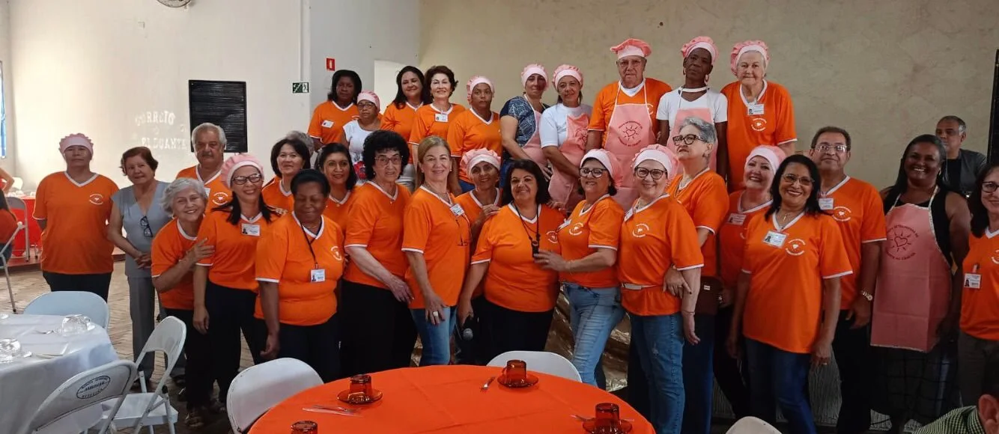
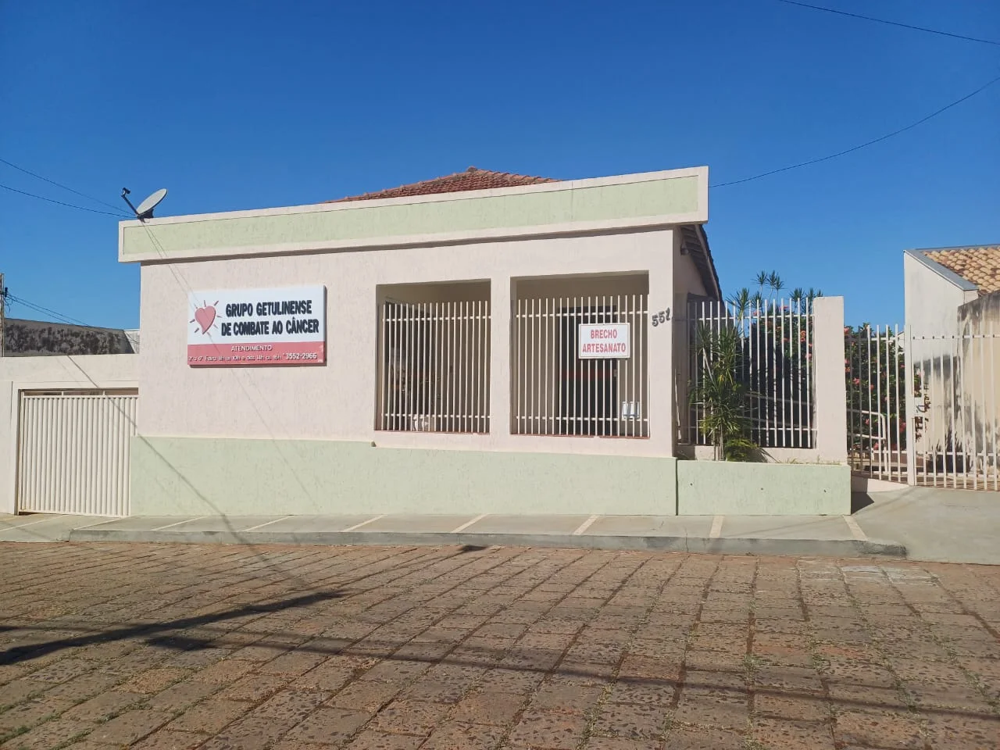

Memorial
Uma homenagem a quem ajudou a construir a história do Grupo Getulinense de Combate ao Câncer e deixou um legado de dedicação e solidariedade.
Ver o Memorial
Acolhimento • Esperança • União
Há quase 25 anos, apoiamos pacientes e famílias de Getulina e Guaimbê com cuidado, recursos e presença em cada etapa do tratamento.
Faltam

Nossa história
Em 2001, seis pessoas aceitaram o convite do Hospital Amaral Carvalho, em Jaú, para conhecer o trabalho de grupos voluntários que apoiavam pessoas com câncer. Em uma sede cedida pelo padre Donizete, no Salão Paroquial, e com rifas, artesanato e muita disposição, nasceu o GGCC.
Hoje, dezenas de voluntários amparam pacientes de Getulina e Guaimbê e auxiliam nos encaminhamentos para Jaú, Bauru, Marília e Barretos. Esse apoio inclui alimentos, exames, medicamentos, equipamentos e presença.
Ler história completaHistórias que nos fortalecem
Minha vida melhorou depois de tudo que passei
Eu me lembro muito bem do dia em que recebi o diagnóstico de que estava com câncer. Era 2001 e já estava desconfiado de ter a doença, pois sentia dores do lado esquerdo do rosto e incômodos na garganta. Resolvi me consultar com um médico da minha cidade, Getulina, no interior de São Paulo, que me encaminhou para o Hospital Amaral Carvalho, em Jaú.
Na instituição, me deram a notícia do tumor de laringe e de outras complicações vindas da doença. Quando o médico me disse que eu poderia não falar mais, perdi os sentidos e desmaiei. Como ficar sem falar? Esse momento foi o mais complicado. Mas depois me acalmei e soube lidar com serenidade com a situação...
“Também não posso esquecer da Liga Getulinense de Combate ao Câncer, que me apoiou incondicionalmente em tudo que precisei.”
Segui o tratamento à risca. As sessões de radioterapia eram incômodas, mas, por sorte, precisei fazer menos do que as 35 previstas inicialmente. Só me alimentava por sonda. Mas não foi tão ruim quanto pode parecer. Eu confiava muito em Deus. Me apoiei na fé para lidar com o tratamento e não fiquei abalado. Às vezes, chorava muito, mas também tinha momentos de grande alegria.
Como Getulina fica a mais de três horas de Jaú, ia segunda-feira para o hospital e só voltava na sexta. Na cidade, ficava na Casa de Apoio, onde fui muito bem tratado. A ajuda que recebi de todos foi fundamental.
Minha mulher me acompanhava nas sessões de radioterapia, esperava a sessão acabar e voltava para Getulina. Ela foi muito carinhosa comigo. Mas não só ela. Toda a minha família ficou ao meu lado e me ajudou, pois precisei me aposentar para seguir o tratamento.
E, claro, do doutor João Fanton, do Hospital Amaral Carvalho. Com a ajuda de todos, saí totalmente recuperado do tratamento.
É óbvio que a doença é dura, mas sinto que a minha vida melhorou depois de passar por tudo o que passei. Parei de fumar e de beber por recomendação médica. Uma bela mudança de vida. Também aprendi a aproveitar os momentos ao lado da família com mais dedicação. Hoje, minha vida é feita só de alegrias.
Eu digo para todos que passam por problemas parecidos que fiquem calmos, procurem o tratamento adequado e os resultados aparecerão. Quando o diagnóstico surge, dá uma sensação de que tudo está perdido. Nada disso. Tendo fé e fazendo o tratamento certo, tudo é possível.
Hoje, graças a Deus, tenho uma vida saudável, curto meus filhos, netos e esposa e vejo a vida com leveza e otimismo.
Cuidado na prática
Cada etapa do tratamento traz necessidades diferentes. Por isso, o grupo atua em diversas frentes para acolher pacientes e suas famílias.
Bazar beneficente
O bazar funciona durante todo o ano na sede do grupo. Roupas, calçados, móveis e utensílios doados pela comunidade são organizados pelos voluntários e vendidos por preços simbólicos.
O bazar é a principal fonte de recursos do GGCC. Cada venda ajuda a custear alimentos, exames, medicamentos e outras necessidades dos pacientes.
Comunidade em movimento
A renda arrecadada ajuda a manter o atendimento aos pacientes durante todo o ano.
Fique por dentro
Destaques de eventos, reuniões, campanhas e outras ações realizadas com a comunidade.
Nossa caminhada
Alguns dos momentos que representam a força da nossa comunidade.
Passado e presente
Conheça quem contribuiu para a trajetória do Grupo Getulinense de Combate ao Câncer e quem continua dedicando seu tempo para manter essa missão viva.
Uma homenagem a quem ajudou a construir a história do Grupo Getulinense de Combate ao Câncer e deixou um legado de dedicação e solidariedade.
Ver o MemorialVoluntários e integrantes que dão continuidade a essa história com cuidado, dedicação e solidariedade.
Ver os membrosFaça parte
O câncer assusta e pode parecer não oferecer opções. Com a sua ajuda, podemos oferecer mais qualidade de vida aos pacientes que enfrentam a doença.
Contribua via Pix usando o CNPJ do grupo.
Escaneie para doar pelo aplicativo do seu banco.
Transparência
O grupo não possui funcionários remunerados. As contribuições custeiam transporte, exames, medicamentos, alimentos e apoio direto às famílias.
Estamos aqui
Envie uma mensagem para a equipe. Responderemos pelos dados de contato informados.